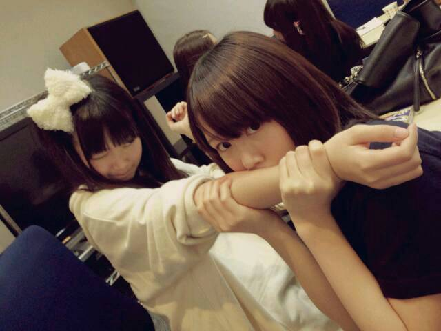
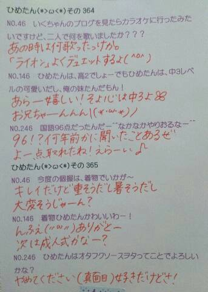

| 2014/02 15 Sat | ひめたん(*>ω<*)そ の408 |
みなさん昨日の雪は大丈夫でしたか？
ひめたんは首都圏の方しか
様子がわからないけど
こっちはすんごいことになっておりました( >_< )
広島で育ったひめたんは
きれいな雪しか知らなかったけど
いやあ自然って時に恐ろしい。
そんな中 昨日は撮影でしたっ
１日スタジオの中で過ごしてたから
外の状況が全然わからなくて
終わって外出てもう唖然(゜д゜)
高速道路は通行止めになってたけど
それでもなんとか無事帰ってきたよー＊
ご近所さんたちが
雪かきして道を作ってくださってて
ほっこりしました。
全国の雪かきした方
みんなの安全のためにありがとう！
撮影の方は情報解禁をお楽しみにー♪
そだ！はぴーばれんたいーん


まっしろなハートをお持ちのひめきゅんさんなら
街中にひめたんからの愛のチョコが舞いすぎて
前が見えないなんてことになってたと思います！
リボンタイの一部は
ままの手作りなんだよー♪♪
何？見つけてない......だと？
あいにくのお天気でしたが
みなさんバレンタインは
いかがお過ごしでしたかー？
女子高のバレンタインが楽しいとはよく聞くけど
乃木坂ちゃんのバレンタインも楽しいよ！
はやくみんなで集まりたいなー( ´ ▽ ` )
予防接種。

みなさんもインフルエンザにはご注意を！
そーいやNOGIBINGO!2
告知してませんでした(´・・｀)ごめんぬ
昨日は２期生ちゃんとのリベンジバトル
後編でございましたー
よしりんお疲れ様でございました♪
次にひめたん出るのは再来週かなー
季刊 乃木坂vo.1早春
3月5日(日)発売！
ひめたんも載せていただいております♪
是非チェックしてみてください(〃ω〃)
生写真も当ててねーっ

 彼女からのチョコより、
彼女からのチョコより、
ひめたんからのひめたんびーむがほしい！
だめかな？？
(もしびーむをくれたら、お返しにリボンを......)
大人はズルいですね！
そーやって釣るんだからまったくーって、へ？
りぼん......だと？んっごほっ
そんなーあげるに決まってるじゃーん(＊^O^＊)
お返しは別にいいんだよ？
お返しとか、ましてりぼんとか、別にいらな......
ひめたんは
ショートケーキどこから食べる？
いちごからかなー
あのねーひめたんねーショートケーキのいちごは
あんまーし好きじゃないんだよね(´・ω・｀)
ショートケーキのいちごは
わざとすっぱいやつ使うって知ってたー？
ちなみに泥棒と警察？
おにごっこの日の記事 この質問多かった！
ひめたんは「ケイドロ」派でした
東京きたら「ドロケイ」派も結構いてびっくり。
ひめたんは家でもふわふわした格好してるん？
個人的にはひめたんは家だと
ジャージとかスウェットだったら良いなと思ってる
ごめんねー裏切ります(´・ω・｀)
ぴんくのもこもこルームウェア◎
ひめたんは大きい女の子、どう思いますか??
ステキだと思います＊＊
手足が長くてすらーっとしてるおにゃのこ憧れる！
ひめたん160センチは欲しかったんだー
なんてゆか、ひめたんね
背が高くもなくて低くもなくて
いっちゃん中途半端なんだー
だから自信持って♪ね
乃木坂の曲のなかで
特に思い入れのある曲はなんですか？
思い入れのある曲......となると
「狼に口笛を」かなあ
基本的に自分の参加したアンダー曲は
しょっぱい思い出ばかり(´・_・｀)
鳥取県っていういなかの者だけど
ひめたんのファンになれますか？
スタバがないんです。゜(゜´Д`゜)゜。
ああ泣かないで！
大丈夫。おうちの近くに
スタバがあってもなくても関係ないよ！
ありがとーうね∩^ω^∩
ちなみにひめたんは最近スタバ行ってないー
今度全曲ライブをやるということで、
ひめたんの乃木坂の曲でのランキング
教えてー！！(最新版)
ぐるぐるカーテン
やさしさなら間に合ってる
やさしさとは
ちなみに１位２位は歌ってないです(笑)
 ひめたんはやっぱりりぼんちゃん派？
ひめたんはやっぱりりぼんちゃん派？
りぼんちゃん好きだったよー( ´ω` )
あとはちび丸ちゃん、じゃじゃハムちゃんも
好きだったよー＊＊
ひめたんのブログの
コメント欄下２ケタに46を踏んだ方へ
手書きでコメ返するコーナー
＼ ひめたん46 ／

いつもたくさんコメント
ありがとうございます
ひめたんのチョコをげっとしようと
お外でおくちあけて待っていたみなさん
風邪引かなかったですかー(´；；｀)？
ひとつだけ言っておきたいことがあるの
あのね、あの大雪は
ひめたんが降らせたんじゃないからね？
こんな時に
うちの暖房が調子悪いのヽ(；▽；)ノ
「もー全然動かないなんなの！」って言うとままに
「そーやって悪口言うからよー」と
ままに怒られてしまいました
とゆーことで絶賛 暖房さんをなだめ中です。
まだ寝てるのー？ねー元気だしてお願ーい
 って
って
暖房さんに向かって話しかけ続けてる私
もうすぐ高校３年生。
(＊´・ω・＊)
コメント(517)
2014/02/15 23:36